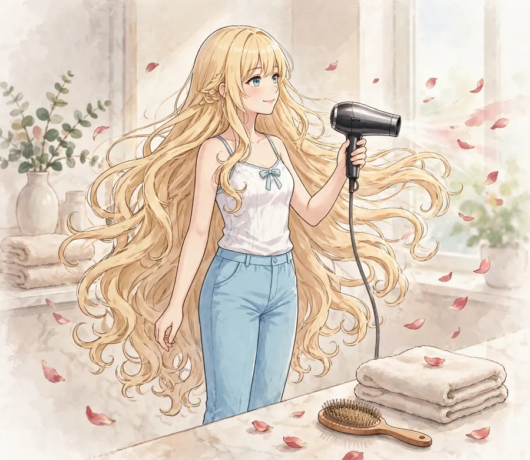

ドライヤーの当て方と乾かす順番

洗髪の後のドライヤーは、毎日繰り返す手順のわりに、「なんとなく全体に風を当てている」という方が多いようです。サロンの現場では、乾かす順番と当て方には一定の型があります。この記事では、その型を自宅向けに整理します。
順番は「根元→中間→毛先」
乾かす順番の基本は、乾きにくい場所からです。髪の根元と頭皮に近い部分は、毛先より乾くのに時間がかかります。まず頭頂部や後頭部など、髪の重なる部分の根元から風を当て、次に中間、最後に毛先へ進みます。毛先は乾きやすいので、順番の最後で十分です。
前髪や分け目など、形を決めたい部分は、乾ききる前に方向を整えておくと、朝の支度が楽になります。髪をかき分けながら、指で根元を起こすように乾かすと、全体に風が通りやすくなります。
風は、近づけすぎず、動かし続ける
ドライヤーは、髪から少し離して（手のひら1〜2つ分が目安）当てます。一か所に当て続けず、左右に振りながら動かすことで、熱が一か所に集中しにくくなります。ノズルの有無や風量の切り替えは、機種の表示に従って使い分けてください。
温風で大まかに乾かした後、仕上げに冷風に切り替える使い方も一般的です。手触りが落ち着くのを確かめながら進めると、乾かしすぎの防止にもなります。
仕上がりは「頭皮側を触って」確認する
乾いたかどうかの確認は、毛先ではなく頭皮側を触って行います。うなじや耳の後ろ、後頭部の下の方は乾き残しが多い場所です。指を根元に入れて、湿り気が残っていないかを確認してから終える習慣をつけると、翌朝の扱いやすさが変わってきます。
順番、距離、確認。この3つが型になると、ドライヤーの時間は短く、安定した手順になります。道具の使い方の表示も一度読み直してみてください。
乾かす前の下準備も、時間を左右します。タオルで髪の水分をしっかり取ってからドライヤーに移ると、風を当てる時間そのものが短くなります。タオルで包んだまま他の支度をする「置く時間」を作るのも有効です。髪の長さ別では、ショートは根元中心で短時間に、ロングは毛束を分けて少しずつ進めるのがコツです。髪をいくつかの束に分けて、乾いた束から外していく方法は、サロンでも使う段取りです。分け目や前髪など、形を決めたい部分は、乾ききる直前に整えます。最後に全体を触って、冷たく感じる部分（まだ湿っている部分）がないかを確かめて終えるのが、私の確認の仕方です。
ドライヤー本体の扱いについても一言。吸気口のほこりを定期的に取る、コードを強く巻きつけないといった基本の手入れは、取扱説明書に書かれています。道具の状態が安定すると、毎日の手順の再現性も上がります。

セラフィナ「乾かすのは根元から、確認は頭皮側を触って。順番が型になると早くなるね」